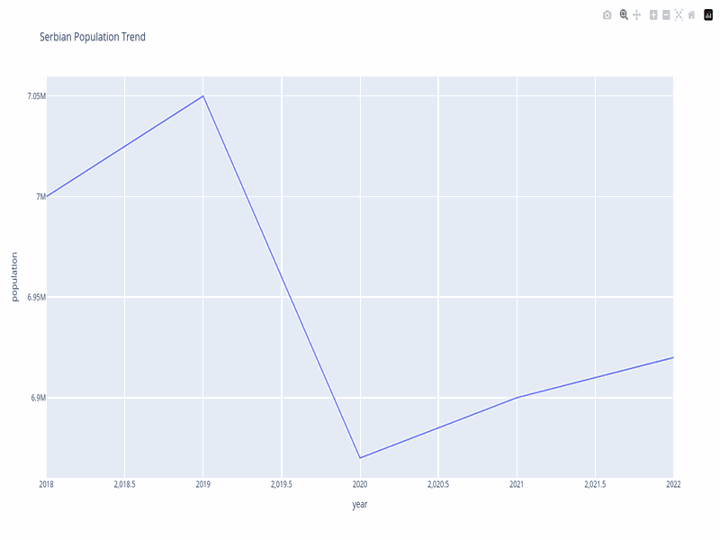
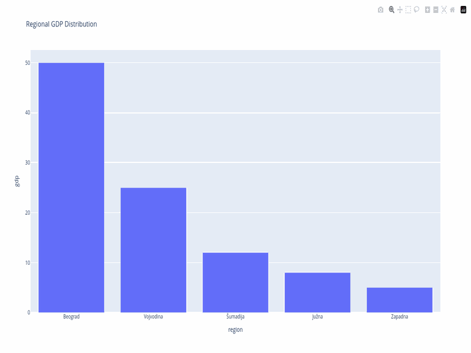
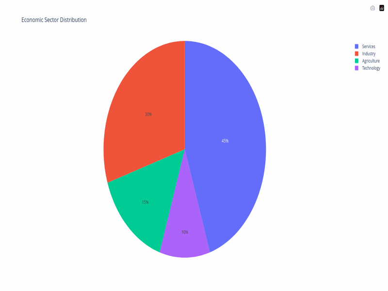
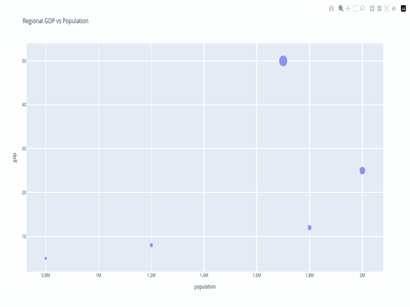
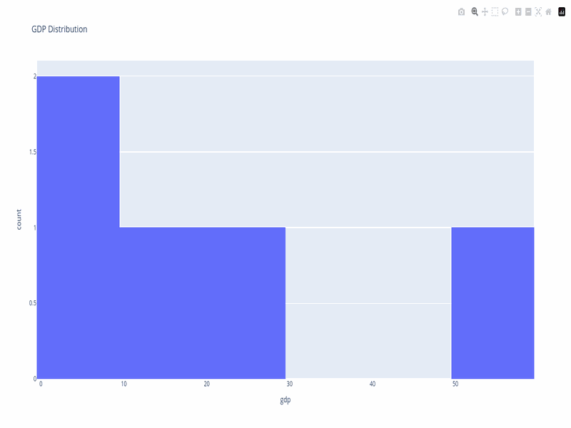
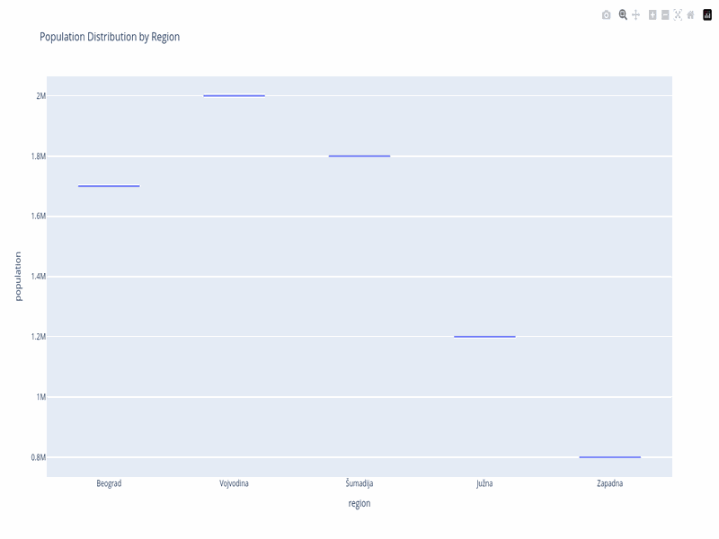

MCP сервер који повезује AI асистенте са портом отворених података Србије. Претражујте, анализирајте и визуализујте демографију, буџете, kvalitet vazduha, некретнине и остало — на српском или енглеском.
# Инсталирање са PyPI pip install serbian-data-mcp # Додајте у Claude Desktop (~/.claude/claude_desktop_config.json) { "mcpServers": { "serbian-data": { "command": "serbian-data-mcp" } } }
{ "mcpServers": { "serbian-data": { "command": "serbian-data-mcp" } } }
{datasets: [{id, title, organization}], total: 42} —
42 одговарајућа скупа података од РЗС са ID ресурса спремних за преузимање.
search → get_resource_data → data_profile → create_chart(line) —
враћа интерактивни Plotly графикон са обавештењима.
{filepath: "exports/serbia_map.html"} —
самодовољну интерактивну HTML карту.
search → download → data_profile → extract_data_insights —
враћа налазе рангиране по тежини као "Одбрана +23% YoY".
search → download → insights → chart → infographic —
враћа {filepath, headline: "-12% пада", big_number: "1,4M"}.
forecast_data(method='linear', periods_ahead=10) —
враћа {projection_note: "По -0,4%/год, Србија ће имати ~5,8M до 2035.", r_squared: 0.97}.
{same_organization: false, shared_formats: ["xlsx"], quality_score: 0.85} —
поређење један поред другог са препорукама.






1. search_datasets("kvalitet vazduha") ← Пронађи скупове 2. get_dataset("id-123", detail_level="metadata") ← Погледај ресурсе 3. get_resource_data("res-456") ← Преузми податке 4. data_profile(data) ← Упознај колоне 5. transform_data(data, "filter", ...) ← Очисти податке 6. create_chart(data, "line", ...) ← Визуализуј 7. export_visualization(figure, "html") ← Сачувај датотеку